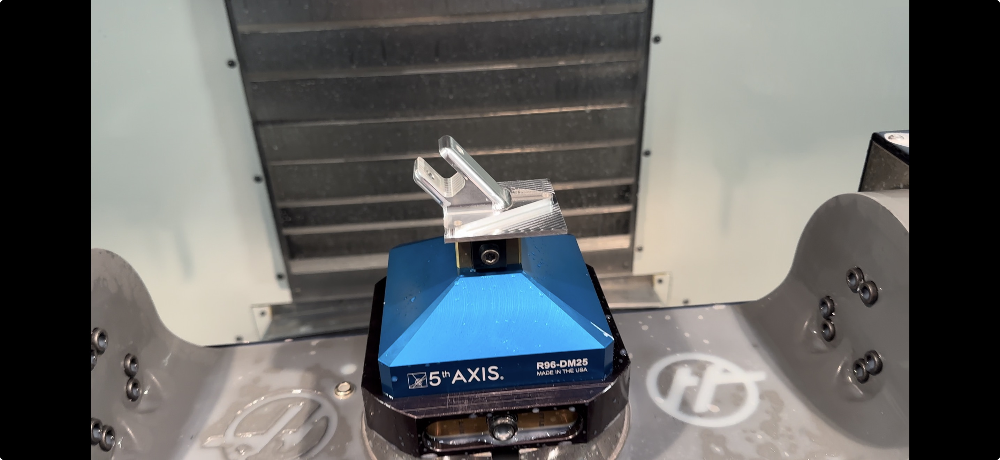

Jan 2024 - Feb 2024
2024 Internal Combustion Front Chassis Shock Mounts
Designed, validated, and manufactured front shock mounts for integration with the carbon monocoque and suspension subsystems.




Jan 2024 - Feb 2024
Designed, validated, and manufactured front shock mounts for integration with the carbon monocoque and suspension subsystems.
